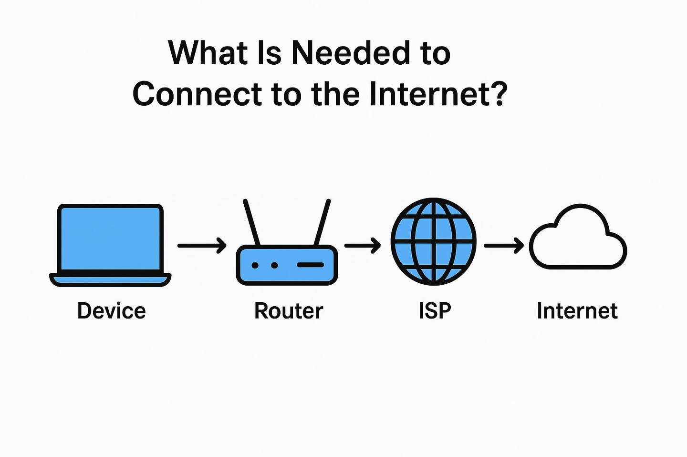
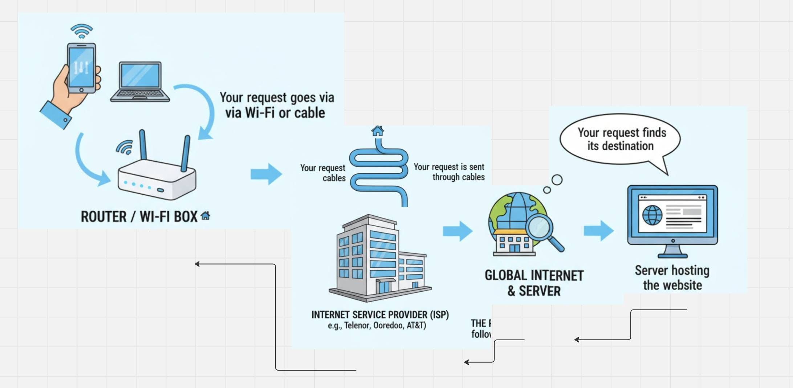

အင်တာနက်ကို နေ့တိုင်းသုံးနေပေမယ့် သူ့ရဲ့ အလုပ်လုပ်ပုံတွေကိုရော သိပြီးပြီလား?
🗓 8 September 2025
👤 Teacher Hsu Lae Waddy
အင်တာနက် Network အကြောင်း အခြေခံကစပြီး ရှင်းပြပေးပါ့မယ်

Internet ကိုချိတ်ဆက်ဖို ဘာတွေလိုအပ်မလဲ
အင်တာနက် အလုပ်လုပ်ပုံကို ရိုးရှင်းတဲ့ အဆင့် (၅) ဆင့်နဲ့ ရှင်းပြပါမယ်။

- 1 Your Device
သင့်ဖုန်း ဒါမှမဟုတ် ကွန်ပျူတာကနေ ဝက်ဘ်ဆိုက် တစ်ခုကို ဝင်ကြည့်တဲ့အခါ သင့်စက်က (Request) တစ်ခုကို လုပ်ပါတယ်။
- 2 Router/Wi-Fi Box
သင့်စက်က လုပ်လိုက်တဲ့ တောင်းဆိုချက်ကို သင့်အိမ်က Wi-Fi Router (သို့) Modem က လက်ခံရရှိပါတယ်။ Router က ဒီတောင်းဆိုချက်ကို အင်တာနက် ဝန်ဆောင်မှုပေးသူ (ISP) ဆီကို ပို့ဆောင်ပေးပါတယ်။
- 3 အင်တာနက် ဝန်ဆောင်မှုပေးသူ (ISP)
(ISP ကဘာလဲ Telenor, Ooredoo စတဲ့ operatorတွေပါ)အဲ့ ISP က ဒီတောင်းဆိုချက်ကို လက်ခံပြီး ကမ္ဘာ့အင်တာနက် ကွန်ရက်ကြီးပေါ်ကို ထည့်သွင်းပေးလိုက်ပါတယ်။ ISP ဟာ အင်တာနက်ဆီသွားတဲ့ တံခါးဝ ဖြစ်ပါတယ်။
- 4 ကမ္ဘာ့အင်တာနက် (Global Internet) & ဆာဗာ (Server)
သင့်စက်ရဲ့ requestဟာ ကမ္ဘာတစ်ဝှမ်းကို ဖြတ်သန်းသွားနိုင်ပြီး သင်ကြည့်ချင်တဲ့ ဝက်ဘ်ဆိုက် သိမ်းဆည်းထားတဲ့ ဆာဗာ (Server) ဆီရောက်တဲ့အခါ၊ ဆာဗာက လိုချင်တဲ့ ဝက်ဘ်စာမျက်နှာ (သို့) ဒေတာကို ပြင်ဆင်ပြီး သင့်စက်ဆီကို ပြန်လည်ပို့ပေးပါတယ်။
- 5 သင့်ဆီကို ပြန်လာခြင်း (Back to You)
သင်စက်ထဲကို ဘယ်လိုပြန်လာလဲ။ ဒီအဖြေ (ဝက်ဘ်စာမျက်နှာ) ဟာ စောစောကထွက်သွားတဲ့လမ်းကြောင်းအတိုင်း ပြန်လာပါတယ်။
server ကနေ ISP -> သင့်အိမ်က Router(wifi) စက်နောက်ဆုံးမှာတော့ သင့်စက် computer or phone ထဲကို စာတွေ ပုံတွေအဖြစ်နဲ့ မြင်တွေရမှာပါ
ဒီလုပ်ငန်းစဉ်က စက္ကန့်ပိုင်းအတွင်း ဖြစ်ပျက်သွားတာပါ။ လိုင်းမကောင်းမှသာ အနည်းငယ်ကြာမှာပါ။
📚 Summary
အနှစ်ချုပ်ရရင်
ဒီတော့ အင်တာနက်ဆိုတာ ကမ္ဘာတစ်ဝှမ်းက ကွန်ပျူတာတွေ၊ ဆာဗာတွေ ချိတ်ဆက်ထားတဲ့ ဧရာမ ကွန်ရက်ကြီး တစ်ခုပါ။ သင်ဟာ ဒီကွန်ရက်ကြီး internet ကို ISP( Telenor, Ooredoo operators) ကနေတဆင့် ဝင်ရောက်အသုံးပြုနေတာဖြစ်ပြီး၊ Router(wifi) ကတော့ သင့်အိမ်အတွင်းက စက်တွေကို ဒီကွန်ရက်ကြီးနဲ့ ချိတ်ပေးနေတာလို့ မြင်နိုင်ပါတယ်။